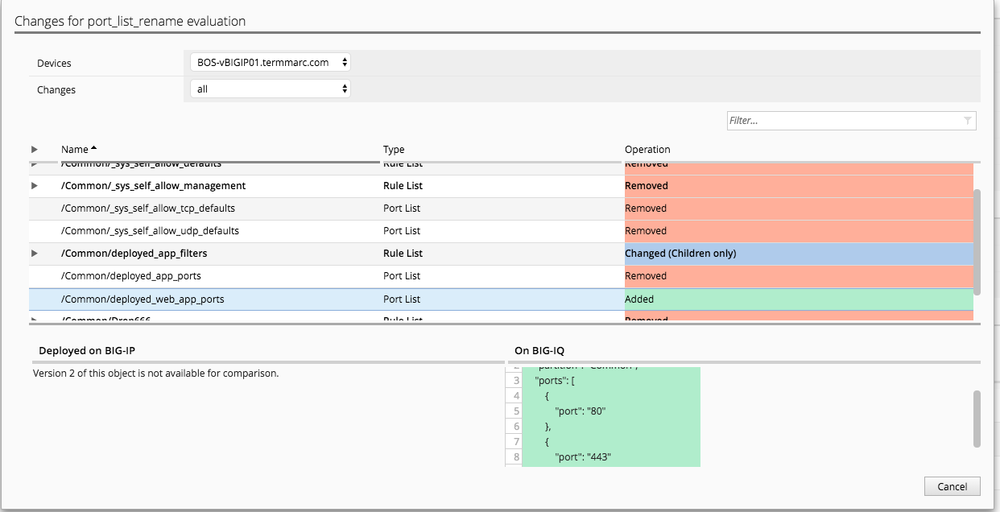

F5 BIG-IQ & Cloud Edition Lab > Class 7: BIG-IQ Application Firewall Manager (AFM) > Module 1: Network Security Firewall Objects Source | Edit on
Lab 1.2: Renaming Firewall Objects:¶
BIG-IP and BIG-IQ object models have long lacked support for renaming core configuration objects. BIG-IQ 6.0.1 has added support for renaming various AFM objects. In this lab, we will work with this new functionality.
Note
This lab uses firewall objects created on Class 7 Module 1, and also uses previously created application deployments (site36.example.com). Please verify the application site36.example.com is a currently deployed application in your environment, and complete the steps in Module 1 before proceeding with steps below
Note
All steps in this lab will be completed using the persona Larry.
Lab 1.2.1: Rename Port Lists¶
Connect to your BIG-IQ (as Larry)and go to : Configuration > Security > Network Security > Port Lists
Click the checkbox next to
deployed_app_ports, and click the Rename button in top right of UI view.In the text box for New Name, enter
deployed_web_app_portsOnce rename is complete, go to Network Security > Rule Lists, and click the rule list
deployed_app_filtersLooking at the second rule,
deployed_app_dests, verify the rename of the port list is reflected in the existing rule.Go to Deployment > Evaluate & Deploy, click Network Security
In the Deployments section, click the Create button.
Complete the following fieds for the deployment, and click Create: - Name:
port_list_rename- Method:deploy immediately- Target Devices:move all to selectedOnce deployment complete, click on the deployment to view the details. Click on the Network Security differences for one of the firewalls.
You should see the old port list has been removed, and the newly named port list has been added
Connect to BIG-IP (BOS-vBIGIP01), and check Security > Network Firewall > Port Lists. You should see the port list object has been renamed to
deployed_web_app_portsOn same BIG-IP, verify that the
deployed_app_filtersrule list has also been updated to reflect the name change.
{kind=link}
In this release, BIG-IQ also supports renaming of the following objects: Firewall Rule Schedules, Address Lists, Rule Lists, and Firewall Policies not assocatied with application templates.
Lab 1.2.2: Rename Firewall Policy Associated With An Application Template:¶
Under Configuration > Security > Network Security > Firewall Policies
Click the checkbox next to
f5-afm-policy_136, the click the More button dropdown, and select RenameEnter
f5-afm-ploicy_136_updatedin the New Name field, and click Save
You should see that a validation error similar to above. BIG_IQ will not allow you to rename a firewall policy that is used in a currently available application template. To rename a firewall policy that is being used with an application template, the security administrator (e.g. Larry) will need to work with the owner of the application templates (e.g Marco) to create a new template that references the new policy name, then switch existing application deployments to the new version of the template. We will go through a similar exercise in Class 7 Module 2.